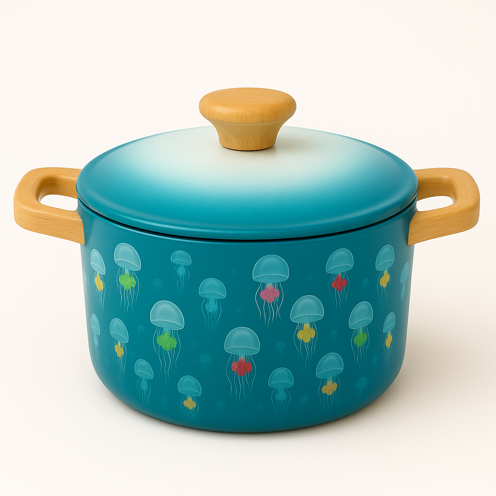

プロダクトデザイン


架空デザイン制作例。いつか商品化できたらいいな、というコンセプト。
Enchanting ocean-inspired design
架空デザイン制作例。いつか商品化できたらいいな、というコンセプト。


海や自然をテーマにしたグラフィック制作の抜粋。
ロゴ LP バナー UIデザイン制作
上品さと力強さのある猪をイメージ
神秘性を表現したモノクロのエンブレムロゴ
自然の力で未来を育むをテーマにしたロゴ
気品とカジュアルさを意識したデザイン
学び合い未来が育つコミュニティ
持続可能なセキュリティをイメージ
小児科のやさしいイメージをデザイン
ライブ用に制作したバンドロゴとフライヤーデザイン。